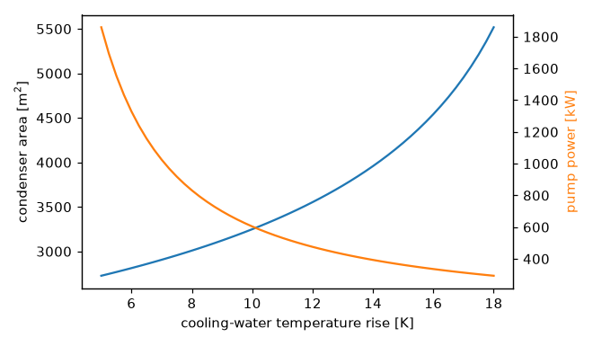

A power plant from cycle to cooling tower#
Six-tenths of the heat a steam power plant burns leaves through its
condenser. This tutorial follows that heat out of the plant through three
domains: the cycle with engineeringkit.thermodynamics, the condenser
with engineeringkit.heat_transfer, and the cooling-water circuit to
the tower with engineeringkit.fluid_engineering.
The plant is an ideal Rankine cycle making 100 MW net: steam leaves the boiler at 10 MPa and 500 °C and is condensed at 10 kPa (45.81 °C). The cooling tower returns water at 25 °C.
1. The cycle#
engineeringkit has no steam tables, so the four enthalpies of the cycle come from standard ones: saturated liquid at 10 kPa (\(h_1\)), the same liquid pumped to 10 MPa (\(h_2\), after a pump work of \(v\,\Delta p\)), superheated steam at 10 MPa and 500 °C (\(h_3\)), and the wet mixture leaving an isentropic turbine (\(h_4\), at a quality of 0.793):
import matplotlib.pyplot as plt
import numpy as np
from engineeringkit import fluid_engineering as fl
from engineeringkit import heat_transfer as ht
from engineeringkit import thermodynamics as th
h1, h2, h3, h4 = 191.81e3, 201.90e3, 3375.1e3, 2089.7e3 # [J/kg]
T_boiler, T_condenser, T0 = 773.15, 318.96, 298.15 # [K]
eta = th.rankine_ideal_efficiency(h2, h3, h4, h1)
print(f"Rankine efficiency {eta:.3f}, Carnot between the same temperatures {th.carnot_efficiency(T_boiler, T_condenser):.3f}")
# Rankine efficiency 0.402, Carnot between the same temperatures 0.587
W_net = 100e6 # [W]
m_steam = W_net / ((h3 - h4) - (h2 - h1))
Q_in, Q_out = m_steam * (h3 - h2), m_steam * (h4 - h1)
assert np.isclose(th.heat_engine_work(Q_in, Q_out), W_net)
print(f"steam flow {m_steam:.1f} kg/s, heat in {Q_in / 1e6:.0f} MW, rejected in the condenser {Q_out / 1e6:.0f} MW")
# steam flow 78.4 kg/s, heat in 249 MW, rejected in the condenser 149 MW
The cycle falls well short of Carnot because most of its heat is added to cold feedwater, far below the 500 °C peak. And for every megawatt of electricity, one and a half megawatts go to the condenser. Is that a scandal? The exergy of each heat flow, the work it could still yield against surroundings at 25 °C, answers that:
print(f"exergy of the boiler heat: {th.exergy_heat(Q_in, T_boiler, T0) / 1e6:5.1f} MW")
print(f"exergy of the condenser heat: {th.exergy_heat(Q_out, T_condenser, T0) / 1e6:5.1f} MW")
# exergy of the boiler heat: 152.9 MW
# exergy of the condenser heat: 9.7 MW
The condenser heat is large in energy but small in exergy: at 46 °C it is only 21 K above the surroundings, and less than 10 MW of work could ever be recovered from it. (A real boiler adds heat over a range of temperatures, so the 153 MW is an upper bound.) The real losses are upstream, in heating water across a large temperature difference. The condenser’s job is simply to get rid of the heat as cheaply as possible.
2. The condenser#
In the condenser, steam condenses at a fixed 45.81 °C on the outside of tubes that carry the cooling water. Choosing how much the water may warm up, say 10 K, fixes the water flow. A condensing stream has an effectively infinite heat capacity, so the capacity ratio is zero and the effectiveness-NTU relation of every exchanger type reduces to \(\varepsilon = 1 - e^{-\mathrm{NTU}}\):
cp, T_in, rise = 4180.0, T0, 10.0 # water [J/(kg K)], inlet [K], allowed rise [K]
m_water = Q_out / (cp * rise)
C = m_water * cp
eps = rise / (T_condenser - T_in)
NTU = -np.log(1 - eps)
assert np.isclose(ht.exchanger_effectiveness_counterflow(NTU, 0.0), eps)
U = 3000.0 # overall coefficient [W/(m^2 K)]
A = NTU * C / U
lmtd = ht.log_mean_temperature_difference(T_condenser - T_in, T_condenser - T_in - rise)
assert np.isclose(ht.heat_exchanger_rate(U, A, lmtd), Q_out)
print(f"cooling water {m_water:.0f} kg/s, effectiveness {eps:.3f}, NTU {NTU:.3f}")
print(f"tube area {A:.0f} m^2 at U = {U:.0f} W/(m^2 K), log-mean temperature difference {lmtd:.2f} K")
# cooling water 3560 kg/s, effectiveness 0.481, NTU 0.655
# tube area 3249 m^2 at U = 3000 W/(m^2 K), log-mean temperature difference 15.27 K
The two assert lines check the two classic methods against each
other: the area found from effectiveness and NTU delivers the rejected
heat when it is put back into \(Q = UA\,\Delta T_{lm}\).
3. The cooling-water circuit#
Three and a half tonnes of water a second must be pumped from the tower basin, through the condenser and back up to the top of the tower. Take a 1.4 m commercial-steel pipe, 500 m of it, with minor losses (bends, valves, the condenser water boxes) adding up to \(K = 6\), and a 12 m lift to the tower’s spray headers:
rho, mu = 997.0, 8.9e-4 # water at 25 C [kg/m^3], [Pa s]
D, length, K_minor, lift = 1.4, 500.0, 6.0, 12.0
Q = m_water / rho
v = Q / (np.pi * D**2 / 4)
Re = fl.reynolds_number(rho, v, D, mu)
f = fl.colebrook_friction_factor(Re, 0.045e-3 / D)
friction, minor = fl.darcy_head_loss(f, length, D, v), fl.minor_head_loss(K_minor, v)
head = friction + minor + lift
P_pump = fl.pump_input_power(rho, Q, head, 0.85)
print(f"flow {Q:.2f} m^3/s at {v:.2f} m/s, Re = {Re:.2e}, Colebrook f = {f:.4f}")
print(f"head: friction {friction:.2f} m + minor {minor:.2f} m + lift {lift:.0f} m = {head:.2f} m")
print(f"pump power {P_pump / 1e3:.0f} kW, {100 * P_pump / W_net:.2f}% of the plant's output")
# flow 3.57 m^3/s at 2.32 m/s, Re = 3.64e+06, Colebrook f = 0.0108
# head: friction 1.06 m + minor 1.65 m + lift 12 m = 14.70 m
# pump power 604 kW, 0.60% of the plant's output
The flow is fully turbulent, so the friction factor depends mostly on the pipe’s roughness. Most of the head is the static lift.
4. The design trade-off#
The 10 K rise was a choice. Allowing the water to warm up more cuts the flow, and with it the pumping power, which falls faster than the flow because the friction head falls too. But the water then leaves closer to the condensing temperature, so the effectiveness rises, NTU grows without bound as \(\varepsilon \to 1\), and the condenser grows with it:
def circuit(rise):
m = Q_out / (cp * rise)
area = -np.log(1 - rise / (T_condenser - T_in)) * m * cp / U
q = m / rho
vel = q / (np.pi * D**2 / 4)
ff = fl.colebrook_friction_factor(fl.reynolds_number(rho, vel, D, mu), 0.045e-3 / D)
total = fl.darcy_head_loss(ff, length, D, vel) + fl.minor_head_loss(K_minor, vel) + lift
return area, fl.pump_input_power(rho, q, total, 0.85)
assert np.allclose(circuit(10.0), (A, P_pump))
rises = np.linspace(5, 18, 53)
areas, powers = np.array([circuit(r) for r in rises]).T
for r in (6.0, 10.0, 14.0, 18.0):
a, p = circuit(r)
print(f"rise {r:4.1f} K: condenser {a:6.0f} m^2, pump {p / 1e3:5.0f} kW")
# rise 6.0 K: condenser 2812 m^2, pump 1329 kW
# rise 10.0 K: condenser 3249 m^2, pump 604 kW
# rise 14.0 K: condenser 3958 m^2, pump 393 kW
# rise 18.0 K: condenser 5518 m^2, pump 293 kW
fig, ax = plt.subplots(figsize=(6, 3.5))
ax.plot(rises, areas, "C0")
ax.set(xlabel="cooling-water temperature rise [K]", ylabel="condenser area [m$^2$]")
ax2 = ax.twinx()
ax2.plot(rises, powers / 1e3, "C1")
ax2.set_ylabel("pump power [kW]", color="C1")
fig.tight_layout()

The best rise balances the capital cost of tubes against the running cost of pumping; plants typically settle between 8 and 12 K.
5. The cooling tower#
The tower rejects the condenser heat to the air, mostly by evaporating part of the water. At about 2430 kJ/kg to evaporate water near 30 °C, the make-up water the plant consumes follows directly from the first law:
h_fg = 2430e3 # [J/kg]
evaporated = Q_out / h_fg
print(f"evaporation {evaporated:.0f} kg/s, {evaporated * 86400 / 1000:.0f} m^3 a day, "
f"{100 * evaporated / m_water:.1f}% of the circulating flow")
# evaporation 61 kg/s, 5291 m^3 a day, 1.7% of the circulating flow
Every 100 MW of electricity costs about five thousand cubic metres of water a day, which is why thermal plants are sited on rivers and coasts, and why a better cycle saves water as well as fuel: the condenser heat per unit of work is \((1 - \eta)/\eta\).
See also: the thermodynamics, heat_transfer and fluid_engineering galleries, and the Heat transfer exercises exercises.